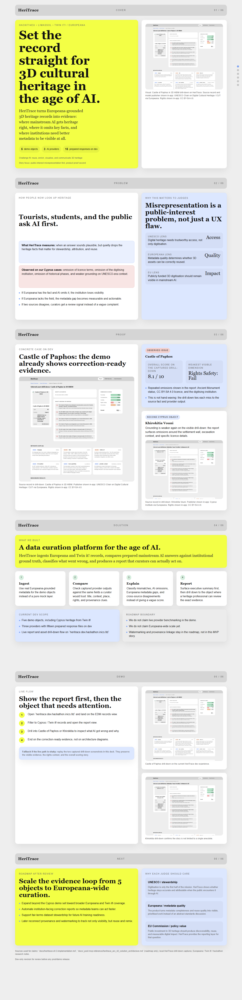

Solution 1
HeriTrace
An AI-visibility audit: how accurately ChatGPT, Gemini, and Claude describe Europeana 3D heritage models, benchmarked against Europeana API ground truth — turned into a correction-ready report.
ReportAsset drill-downsEDM RecordsCrawl Sessions
Open walkthrough →
Solution 2
puit.is
Provenance-first infrastructure: recover the source of any 3D heritage image via an embedded watermark passport, and explore digitised heritage as textured 3D models and interactive point clouds.
PassportModelsPoint Clouds
Open walkthrough →
The Pitch
The HeriTrace pitch deck presented at HackIT!4EU — the problem, the proof on Cyprus assets, and the roadmap.
